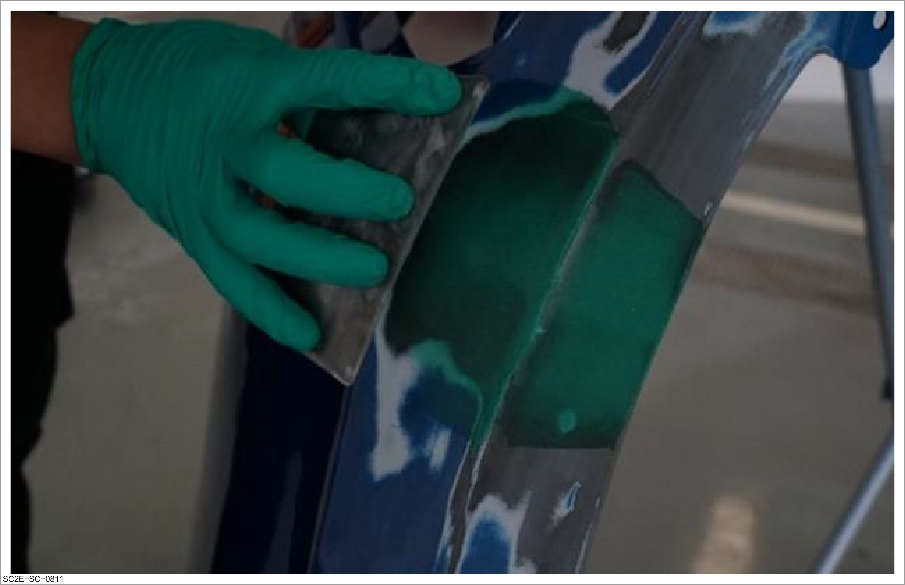
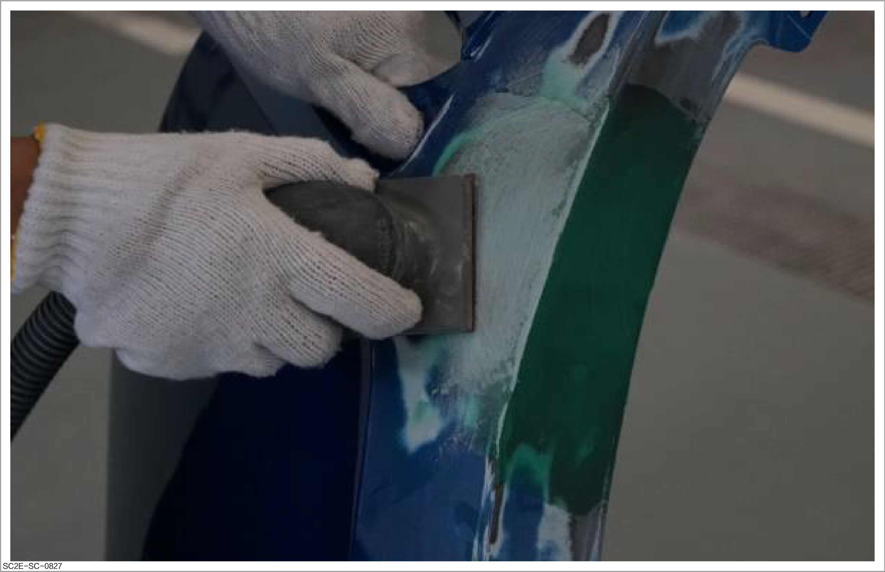
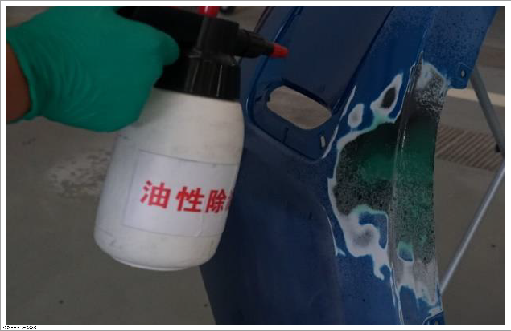

Application of plastic poly-putty

This document describes the key steps of applying plastic poly-putty. The application methods for other steps are similar to those of sheet metal poly-putty. Refer to Application of sheet metal poly-putty
Operation steps
-
Repair the plastic parts. Refer to How to repair plastic parts
-
Application of plastic poly-putty:
Caution
-
Use the resin poly-putty (plastic putty). Use of the ordinary polyester poly-putty may result in cracking as it does not have the softness of plastic parts.
-
The plastic poly-putty is sticky and easy to generate steps after scraping. During scraping, follow the principle of thin scraping each time and repeated application.
-
Thoroughly mix the main components of plastic poly-putty and curing agent, and apply the mixture on the parts to be repaired.
-
Apply the first thin layer of poly-putty so that it can be squeezed into the gap in the damaged area.
-
Fill the damaged surface by applying multiple thin layers. In case of large steps on the surface, trimming is required.

-
-
Forced drying of poly-putty: Use an infrared lamp adjusted to 50°C to heat the area according to the product description, and set the heating and curing time to cure the poly-putty.
CautionControl the temperature for drying panels to avoid deformation of plastic parts due to excessive temperature.
-
Grind the poly-putty to restore the original shape of bumper.
-
Paste sandpaper P120 on a double-action grinder or manual grinding plate for the first grinding, and repair the external profile of the damaged area.

-
Use P240 sandpaper to grind for the second time to remove coarse sandpaper marks.
-
Grind a slightly larger area with sandpaper P320, and reserve the intermediate paint application area.
-
After grinding, clean and degrease the grinding part and its around.

-
Subsequent operations
-
Apply the intermediate paint. Refer to Spraying of intermediate paint
-
Spray the plastic parts. Refer to Spraying of plastic parts
-
Dry the sprayed paint. Refer to How to dry
-
Perform fine treatment for the sprayed surface. Refer to Performing polishing